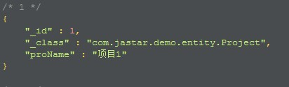
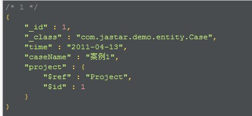
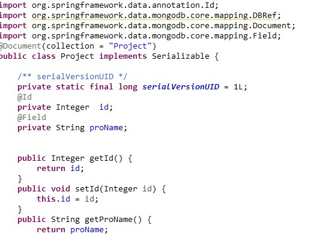
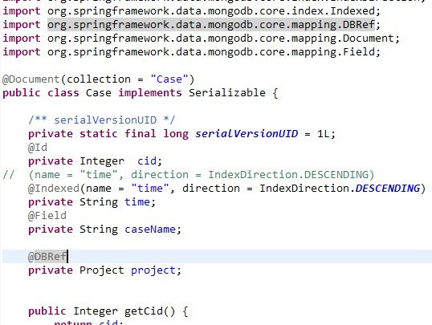
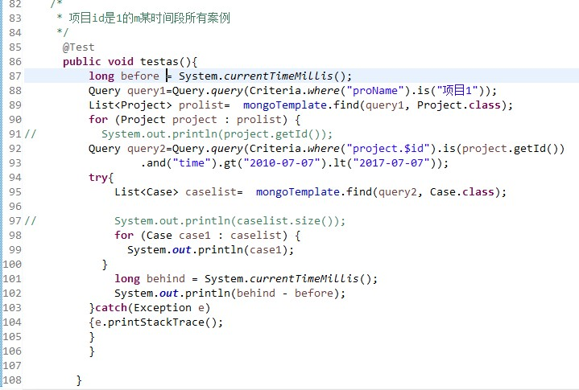
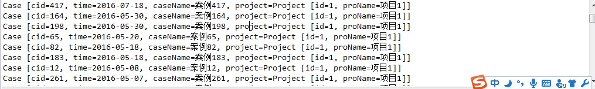

就例子总结与mysql 的对比¶
实例¶
用上面的框架做个demo，有2000个项目（集合为Project），每个项目里分别有500个案例（Case）。我建立的一个案例对应一个项目结构，每条案例引用一个项目，（类似于每个学生有班级的id，之前一直用嵌入的结构，tm返回结果大于16M，弄了好几天，还是不能解决，所以决定换成这样的存储）
 集合结构 Project和Case
实体类 Project
- 实体类Case
- @Indexed(name = “time”, direction = IndexDirection.DESCENDING)为time字段建立索引
- @DBRef引用Project集合
先保存入MongoDB的数据，案例里有时间（time）的字段，意思是每个案例有不同的时间，我是利用随机数建立的随机时间。
红框的部分：MongoDB不支持级联保存，MongoDB不支持事务，所以分别保存，先保存被引用的，再保存引用的。
输出结果（我在Case实体类里重写了toString）
与Mysql对比¶
我分别测试了MongoDB和Mysql：
在某个时间段内的所有案例，结果集大约为38万条数据，MongoDB比Mysql查询速率快了约40秒
而在一个项目里的某段时间的案例，结果集大约190条数据，Mysql比MongoDB快了约1000毫秒
相比较MySQL，MongoDB数据库更适合那些读作业较重的任务模型。MongoDB能充分利用机器的内存资源。如果机器的内存资源丰富的话，MongoDB的查询效率会快很多。
在插入数据时候，2000个项目，也就是说有1000000个案例，我用Mysql插了一上午啊（而且经常出现报错，提示连接数不够，我用spring+Mybatis整合的，也许我哪参数配的少了吧），而MongoDB花了近五分钟，就插入完成了。
MongoDB优势¶
- MongoDB适合那些对数据库具体数据格式不明确或者数据库数据格式经常变化的需求模型，而且对开发者十分友好。
- MongoDB官方就自带一个分布式文件系统，可以很方便地部署到服务器机群上。MongoDB里有一个Shard的概念，就是方便为了服务器分片使用的。每增加一台Shard，MongoDB的插入性能也会以接近倍数的方式增长，磁盘容量也很可以很方便地扩充。
- MongoDB还自带了对map-reduce运算框架的支持，这也很方便进行数据的统计。
MongoDB缺点¶
- 事务关系支持薄弱。这也是所有NoSQL数据库共同的缺陷，不过NoSQL并不是为了事务关系而设计的，具体应用还是很需求。（所以他不能完全代替关系型数据库，可以说是辅佐型，对关系型的补充）
- 稳定性有些欠缺。
- MongoDB一方面在方便开发者的同时，另一方面对运维人员却提出了相当多的要求。